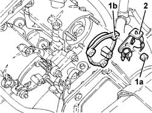
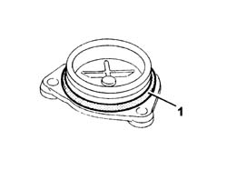

1036G48 rear seal of camshaft of one l/h or r/h top head - r + r and replace seal
- Path
- Procedures > 10 ENGINE > 1036 TIMING SYSTEM > 1036G camshaft (1) in top heads (2) > 1036G48 rear seal of camshaft of one l/h or r/h top head - r + r and replace seal
- Kind
- repair procedure (removal / refitting; the operation number is the code)
- Applies to
- all engines; all production periods
- Interactive page
- https://sloeber94.github.io/elrnDB-fDbl/en/#/2584351
Applies to: all engines; all production periods
 Removing
Removing
 Refitting
RefittingOpen the bonnet lid and disconnect the negative battery terminal.
 | Name | Connector |
|---|---|---|
- | Battery | A1 |
1048A32 sleeve from air cleaner to intake manifold - r + r
1056B82 injection/ignition system e.c.u. (one) - r + r
1056B87 ignition/injection system control unit mount - r r
1. Undo the nuts (1a) and remove the rear seal for the camshaft involved (1b).
2. Recover the wiring mounting bracket.

Applies to: all engines; all production periods
Refitting
Removing1. Replace the camshaft rear cover gasket.

Applies to: all engines; all production periods
Place the camshaft rear seal, complete with wiring mounting bracket back in its housing and fix it tightening the nuts to the recommended torque.
 | Fastening | Component | Ø | Value (daNm) |
|---|---|---|---|---|
- | Nut | INTAKE AND EXHAUST CAMSHAFT REAR COVER | M7 | 1.5 |
1056B87 ignition/injection system control unit mount - r r
1056B82 injection/ignition system e.c.u. (one) - r + r
1048A32 sleeve from air cleaner to intake manifold - r + r
Connect the negative battery terminal and close the bonnet lid.
| Name | Connector |
|---|---|---|
- | Battery | A1 |
Topics linked from this page (3)
- 1048A32 sleeve from air cleaner to intake manifold - r + r
- 1056B82 injection/ignition system e.c.u. (one) - r + r
- 1056B87 ignition/injection system control unit mount - r r
Topics that link to this page (12)
- 1016B20 lh cylinder head extension - replace gasket
- 1016B24 rh cylinder head extension - replace gasket
- 1016C10 cylinder head - r + r and replace gasket
- 1020D12 front crank shaft oil seal cover - r + r and replace seals
- 1020D18 front crank shaft cover oil seal - replace
- 1032B10 toothed timing belt - r + r for timing adjustment or replacement
- 1032B46 toothed drive pulley - r + r
- 1032B52 toothed driven pulley (one) - r + r
- 1032C18 mobile timing system tensioner - r + r for 24 valve engines
- 1032D34 timing system guard assemblies - r + r
- 1036G10 camshaft controlling exhaust valves in top head - r + r with top head removed - includes replacement of top head
- 1036G20 camshaft controlling intake valves in top head - r + r with top head removed - includes replacement of top head if necessary